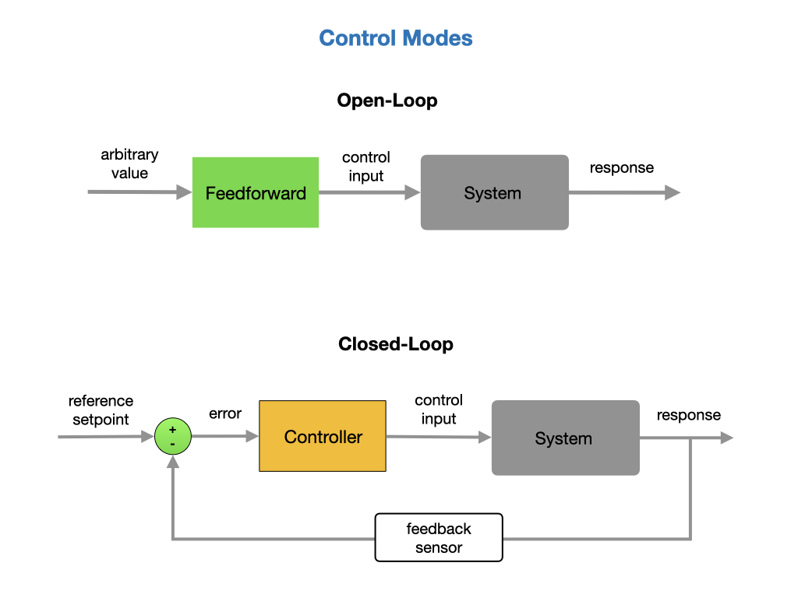
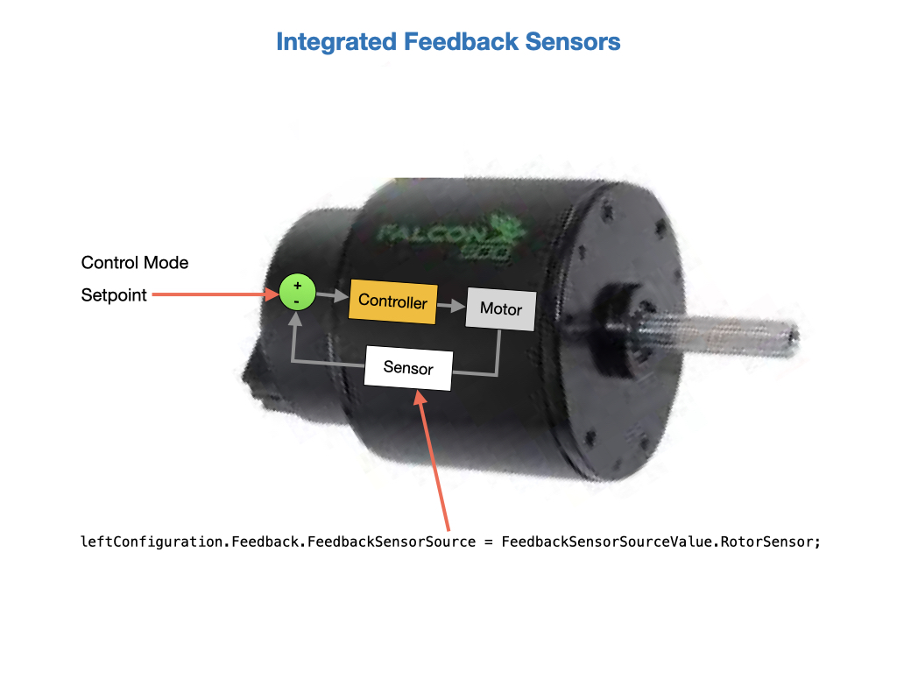
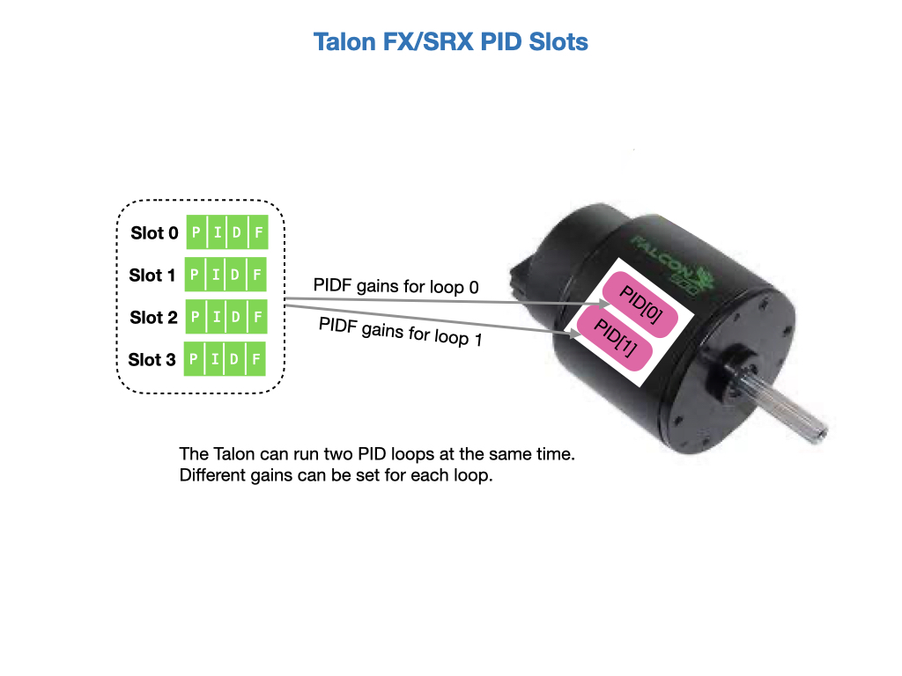
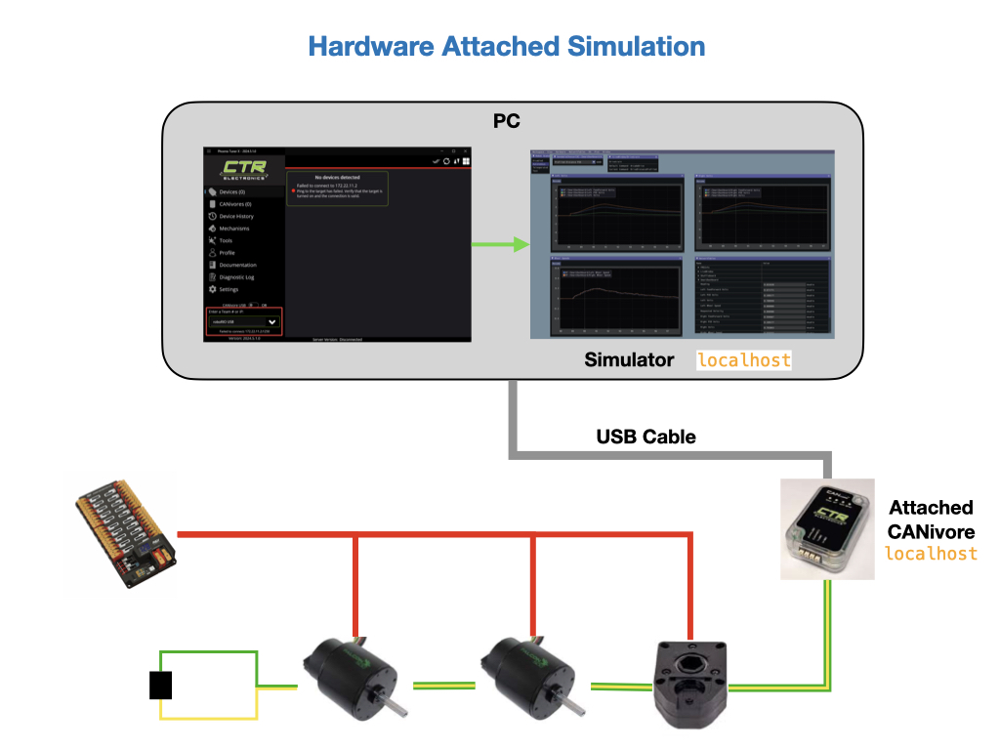

Motor Control
There are several control modes used to drive a motor. The control mode used will depend on the application. The modes fall into two larger categories Open-Loop and Closed-Loop. Open-Loop control is often used with feedforward to set an arbitrary amount of power to drive the motor. Closed-Loop modes will alter the motor power based on sensor feedback.

The following picture shows the most commonly used Phoenix control modes. Each control mode is represented by a data structure class that gets applied to the motor when requested. The DutyCycleOut and VoltageOut modes are would be used with direct input from a game controller. VoltageOut can also be used with a PID loop that was implemented in the user program.
The PositionVoltage and VelocityVoltage requests will run the PID loop inside of the Pheonix controller. One of four Slots can be choosen that hold the PID gain values. A FeedForward value can also be submitted with the control request.

Open Loop Modes
Open-Loop modes are usually used in combination with a game controller. The setup is very simple since there’s no feedback sensor required. A percentage power output is sent to the motor using the DutyCycleOut class. Percentage power is the proportion of supply voltage to apply in fractional units between -1 and +1. See Open Loop Control in the Phoenix6 documentation.
Control Output Types
The TalonFX currently supports three base control output types: DutyCycle, Voltage, and TorqueCurrentFOC.
DutyCycle
A DutyCycle control request outputs a proportion of the supply voltage, which typically ranges from -1.0 to 1.0, inclusive. This control output type is typically used in systems where it is important to be capable of running at the maximum speed possible, such as in a typical robot drivetrain.
Voltage
A Voltage control request directly controls the output voltage of the motor. The output voltage is capped by the supply voltage to the device. Since the output of a Voltage control request is typically unaffected by the supply voltage, this control output type results in more stable and reproducible behavior than a DutyCycle control request.
TorqueCurrentFOC
Important
This feature requires the device to be Pro licensed.
A TorqueCurrentFOC control request uses Field Oriented Control to directly control the output torque current of the motor. Unlike the other control output types, where output roughly controls the velocity of the motor, a TorqueCurrentFOC request directly controls the acceleration of the motor.
The Case for Torque Control
A disadvantage with both DutyCycle and Voltage control output types is that they control acceleration indirectly and require a velocity feedforward to hold a constant velocity. On the other hand, torque-based control output types, such as TorqueCurrentFOC, directly control acceleration, which has several advantages:
Since the torque request is directly proportional to acceleration, is generally unnecessary. A torque output of 0 corresponds to a constant velocity, assuming no external forces.
Can be tuned independently of all the other closed-loop gains by comparing the measured acceleration with the requested acceleration.
Because the output is in units of torque, the units of the gains more closely match those of forces in the real world.
As a result, torque-based control output types offer more stable and reproducible behavior that can be easier to tune compared to the other control output types.
Using torque control increases peak power by ~15%.
Closed Loop Modes
On the roboRIO robot the motor controllers will implement the necessary PID loops, so we don’t have to use the WPILib PID controllers as we did on the Romi. We still have to write a few lines of code to specify the control mode and a setpoint target, but the motor controller will mostly do the rest. The following Closed-Loop modes can be used with the Talon FX and SPX motors. For more details see the Phoenix6 Closed Loop Control documentation.
Position - The Position Closed-Loop control mode can be used to abruptly servo to and maintain a target position. Mainly used for mechanisms like elevators and arms that are subject to gravitational forces. See Position Closed-Loop Control in the Phoenix6 documentation.
Velocity - Velocity Closed-Loop logic is used to maintain a target velocity. Often used for mechanisms like flywheels that need to be kept at a constant speed. It’s also used for the drivetrain where a continuous stream of velocity setpoints are sent drive a desired trajectory. In this mode the controller will try and maintain the velocity regardless of the torque put on the motor. See Velocity Closed-Loop Control in the Phoenix6 documentation.
Motion Magic - Motion Magic is a control mode for Talon SRX that provides the benefits of Motion Profiling without needing to generate motion profile trajectory points. When using Motion Magic, Talon SRX / Victor SPX will move to a set target position using a motion profile, while honoring the user specified acceleration, maximum velocity (cruise velocity), and optional S-Curve smoothing. See Motion Magic in the Phoenix6 documentation.
Continuous Mechanism Wrap - A continuous mechanism is a mechanism with unlimited travel in any direction, and whose rotational position can be represented with multiple unique position values. Some examples of continuous mechanisms are swerve drive steer mechanisms or turrets (without cable management). See Continuous Mechanism Wrap in the Phoenix6 documentation.
The sensors used for closed-loop control are designated during motor configuration. The most common sensor used with the FalconFX/SRX controller is the RotorSensor, formally referred to as the Integrated Sensor, which is an encoder that is physically attached to the motor. We only need to pass in the Control-Mode and setpoint in order to run our closed loop.

Setting PID Gain Values
All of the built-in Closed Loop Control modes require PID values configured into the motor controller. You can set up multiple PID gain values and put them into memory slots within the Talon’s motor controller. You can then assign the gain values from a selected slot when you make the control request to the motor. There are four slots to choose from, so you can configure up to four sets of PID gain values.

The following code sets up the PID values for Slot0 of the drivetrain’s front wheels. The PID values should be determined by experimentation.
We can switch between the PID slots in our code when we make the velocity request to the motor. Most Closed Loop Control requests also allow you to add a FeedForward value.
// create a velocity closed-loop request, voltage output, slot 0 configs
var request = new VelocityVoltage(0).withSlot(0);
// set velocity to 8 rps, add 0.5 V to overcome gravity
talonFX.setControl(request.withVelocity(8).withFeedForward(0.5));
See Closed-Loop Gain Slots in the Phoenix6 documentation for details.
Status Signals
Signals represent live data reported by a device; these can be yaw, position, etc. To make use of the live data, users need to know the value, timestamp, latency, units, and error condition of the data. See Status Signals for a detailed explaination.
The best beneift of using status signals is to significantly reduce CAN buss utilization. This is accomplished by eliminating all request messages on the CAN Buss. And by combining all response message into a single message executed on a reugular frequency. Let’s take an example for make this easier to understand.
Typically we write our code to ask the motor the current position and the current velocity. We can then display these values in our code to make decisions and to display on the driver dashboard. To do this we would sent a getPosition message to the motor and receive a single response. Then we would send a getVelocity messsage from the motor and then get a response. Thats four message on the CAN buss. Some inexperienced programmers would also call this multiple times in thier code to get the most current and up to date values.
Compare this to status signals which sends the request to set up a status signal on a periodic basis a single time at when the object is instantiated. Then at the appropriate time is send the status signle response contaol BOTH the position and the velocity in a single message. This reduces the messages from 4 down to 1-a 75% savings! Now lets assume that we run this code every loop, so every 20 milliseconds, that’s 50 times per second. So without status signals thats 200 messages versus with status signals 50 messages. Now, if we have 15 motors on the robot, that’s 3,000 without status signals and 750 message with. And that is every second!!!! 3,000 messsages on the CAN buss only getting motor status and not doing anything to run the robot motors!
Let’s take a look at how you do this in code. Using our ProgTain1 example code.
Intake Subsystem
First, we define a variable to contain all our statictics.
private final IntakeStats ioStats = new IntakeStats();
Next, we define a class to hold all of our statictics becuase it is much easier to pass a single variable (containing the class) between classes than it is to return individual values.
/* a Generic class for handling the IO stats generated in the Kraken module */
class IntakeStats {
//Stats for the Intake/Expel Motor
public boolean MotorConnected = true;
public double rollerPositionRads = 0.0;
public double rollerVelocityRpm = 0.0;
public double rollerAppliedVolts = 0.0;
public double rollerSupplyCurrentAmps = 0.0;
public double rollerTorqueCurrentAmps = 0.0;
public double rollerTempCelsius = 0.0;
}
Next, we add a function to our state procesing loop to go get the statictics from the intakeKraken motor control class-passing in our statictics class so that intakeKraken has somewhere to pass them back to us.
//go update the signal data
m_IntakeKraken.updateStats(ioStats);
Next we take the data we got back and put it on the shuffleboard to thell the drivers what is going on with the intake motor.
************************************************
* Update the Shuffleboard with Motor Statistics
************************************************/
private void UpdateTelemetry() {
intakeVelocity.setDouble(ioStats.rollerVelocityRpm);
intakePosition.setDouble(ioStats.rollerPositionRads);
intakeSupplyCurrent.setDouble(ioStats.rollerSupplyCurrentAmps);
intakeTorqueCurrent.setDouble(ioStats.rollerTorqueCurrentAmps);
intakeAppliedVolts.setDouble(ioStats.rollerAppliedVolts);
intakeTemp.setDouble(ioStats.rollerTempCelsius);
intakeState.setValue(currentState.name());
}
IntakeKraken
First, we have to define our status signal variables to receive the data from the motor on a periodic based. We must ensure that the unit types are correct for each of the signals we are requesting. The reason that you needto declare seperate variables for the status signals is becuse the motor is returning values on a periodic basis-whether your code is running or not! And it needs somewhere to put the data that your program can access.
// Status Signals
private final StatusSignal<Angle> rollerPosition;
private final StatusSignal<AngularVelocity> rollerVelocity;
private final StatusSignal<Voltage> rollerAppliedVolts;
private final StatusSignal<Current> rollerSupplyCurrent;
private final StatusSignal<Current> rollerTorqueCurrent;
private final StatusSignal<Temperature> rollerTempCelsius;
In the constructor of the intakeKraken class, we tell the TalonFX where to put the statitics we are looking for (which is into the variables we declared previously) and what specific motor function to call to get the statistic we are looking for. Please remember that this is in the constructor-which only runs once at class instantiation.
// Set signals
rollerPosition = m_talonFX.getPosition();
rollerVelocity = m_talonFX.getVelocity();
rollerAppliedVolts = m_talonFX.getMotorVoltage();
rollerSupplyCurrent = m_talonFX.getSupplyCurrent();
rollerTorqueCurrent = m_talonFX.getTorqueCurrent();
rollerTempCelsius = m_talonFX.getDeviceTemp();
Also in the constuctor, we need to tell what frequency we want that data returned-in this case 100hz or 100 times per second. We also pass in the variable names.
BaseStatusSignal.setUpdateFrequencyForAll(
100.0,
rollerPosition,
rollerVelocity,
rollerAppliedVolts,
rollerSupplyCurrent,
rollerTorqueCurrent,
rollerTempCelsius
);
Important
100 times per second is as fast as most hardware can physically reply. Setting any lower value will substantially add more messages to the Can buss that contain exactly the same data (because the hardware has not yet refreshed the value). As it is, the robot code is running at 50 times per second and the hardware at 100 times per second. So the hardware is refreshing faster than the roborio can process it.
And finally, we create an updateStats method that takes the data from the base signal variables and puts it into the IOStats class when requested.
/****************************************************************************************
* Get the IO statictics from the motor and put them into the passed in IntakeStats class
*****************************************************************************************/
public void updateStats(IntakeStats stats) {
stats.MotorConnected =
BaseStatusSignal.refreshAll(
rollerPosition,
rollerVelocity,
rollerAppliedVolts,
rollerSupplyCurrent,
rollerTorqueCurrent,
rollerTempCelsius)
.isOK();
stats.rollerPositionRads = rollerPosition.getValueAsDouble();
stats.rollerVelocityRpm = rollerVelocity.getValueAsDouble();
stats.rollerAppliedVolts = rollerAppliedVolts.getValueAsDouble();
stats.rollerSupplyCurrentAmps = rollerSupplyCurrent.getValueAsDouble();
stats.rollerTorqueCurrentAmps = rollerTorqueCurrent.getValueAsDouble();
stats.rollerTempCelsius = rollerTempCelsius.getValueAsDouble();
}
That’s it. This is all the code you need. Now your robot program in getting statistics from the motor at 100 times per second.
Hardware Attached Simulation
CANivore supports hardware-attached simulation when used in an FRC robot program. This allows a CANivore to be used with real devices from a PC. See Hardware Attached Simulation in the Phoenix 6 documentation. The devices must be independently powered since the USB cable will not supply enough power.

References
CTRE - Phoenix6 Control
CTRE - Phoenix6 Examples
CTRE - Talon FX/SRX Sensors- Phoenix documentation.
CTRE - Talon SRX - User’s Guide